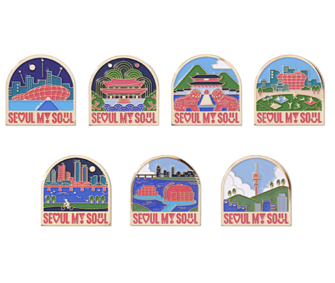
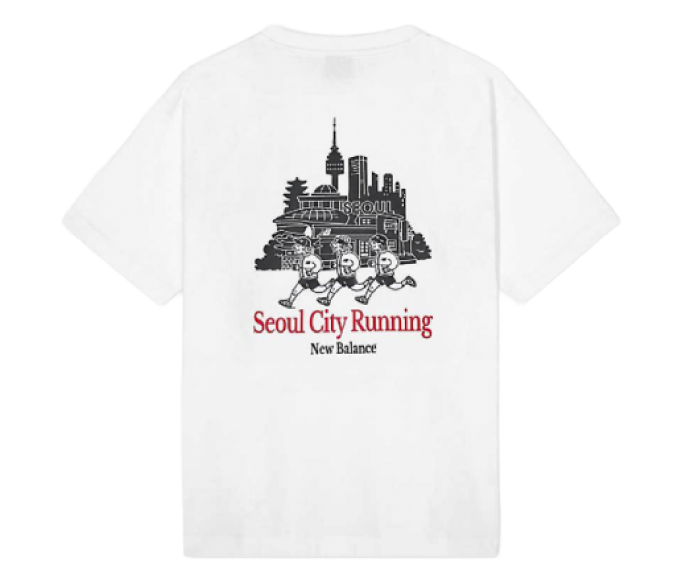
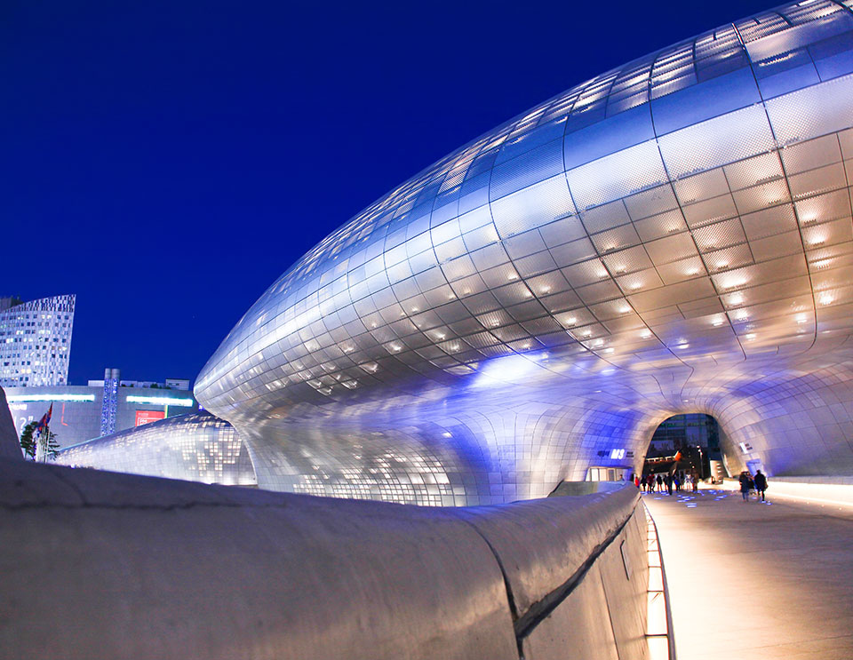
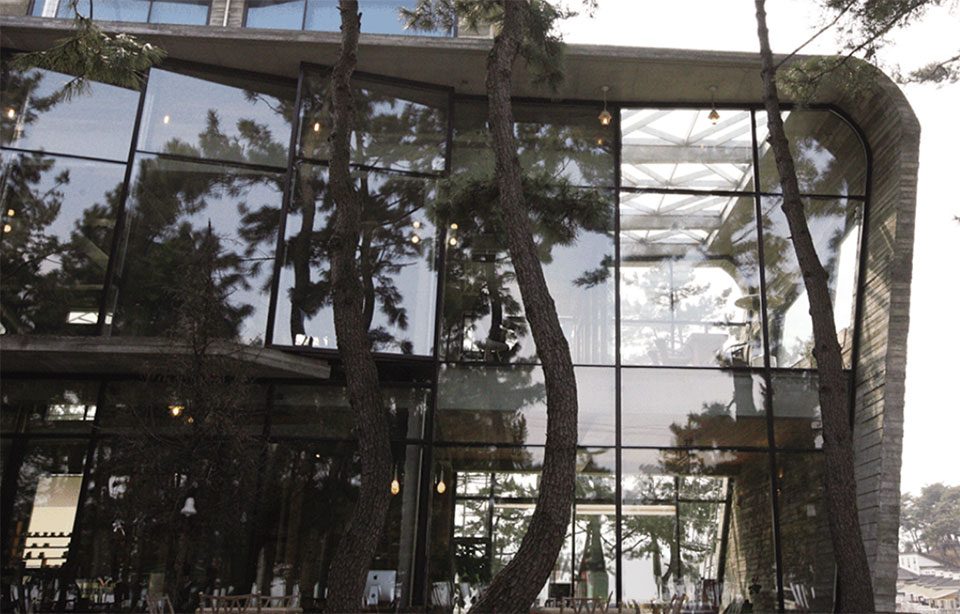
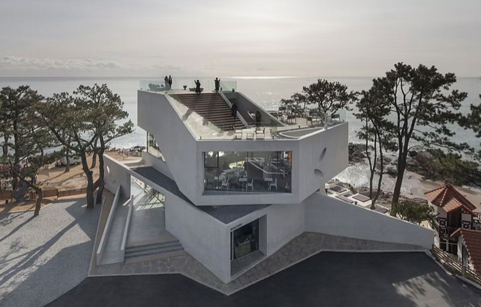

도시의 랜드마크와 스카이라인은 더 이상 ‘풍경’에 머물지 않고,
상품·콘텐츠 디자인에 반복 활용되는 브랜드이자 지식재산(IP)으로
작동하고 있다. 루이비통과 구찌가 서울의 공간을 무대로 선택한
사례는, 한국의 랜드마크가 글로벌 콘텐츠 소비 맥락에서 구체적으로
사용되는 흐름을 보여준다.
그러나 건축물은 누구나 향유하는 공공의 풍경이면서도, 창작성이
인정되면 저작권법상 ‘건축저작물’로 보호될 수 있어 이용 방식에 따라
법적 평가가 달라진다.
따라서 촬영·기록을 허용하는 범위와 달리, 랜드마크 외형을 패턴화해
상품에 적용하거나 디지털로 재현해 굿즈·콘텐츠 핵심 요소로 쓰는
경우에는 권리 정리와 라이선싱 전략이 중요해지고 있다.
뉴욕의 자유의 여신상. 파리의 에펠탑. 로마의 콜로세움. 인도의
타지마할. 중국의 만리장성. 세계 주요 도시들을 대표하는
랜드마크들이다. 랜드마크는 특정 지역을 대표하는 상징적 건물 또는
지형물 등을 뜻하며, 그 지역의 정체성을 나타낸다. 자유의 여신상은
미국의 독립 100주년을 기념하여 자유, 민주주의 가치, 희망의
징표로 프랑스가 미국에게 준 선물이며, 에펠탑은 세계에서 가장
높은 구조물로 건축되어, 당시 프랑스의 탁월한 철강 기술, 혁신적
건축 기술을 보여주며, 프랑스 혁명 100주년을 상징한다. 콜로세움은
거대했던 로마제국의 권력, 타지마할은 영원한 사랑의 증표,
만리장성은 인류 역사상 가장 큰 건축 프로젝트로 중화 문명의
연속성을 보여준다.
이처럼 랜드마크는 그 자체로 하나의 거대한 ‘브랜드’이자 지식재산
(IP)가 된다. 이러한 랜드마크나 그 랜드마크가 이루는 도시의
스카이라인은 다양한 상품 디자인에 자주 활용되며, 최근 ‘K-컬처’의
위상이 높아지면서 한국의 랜드마크 역시 매우 구체적이고 전략적인
방식으로 사용되고 있다. 2023년, 세계적인 패션 브랜드인
루이비통1과 구찌2는 각각 서울 잠수교와
경복궁에서 패션쇼를 개최했고, 최근에는 단순히 배경으로 활용되는
것을 넘어, 건축물의 실루엣을 제품의 패턴으로 녹여내거나 글로벌
한정판 아이템으로 제작하는 경우도 많아지고 있다.

▲ 서울시의 서울마이소울 풍경마그넷
▲ 뉴발란스 UNI NB 서울 시티러닝 2.0 반팔티
최근 전세계를 강타한 넷플릭스의 ‘케이팝 데몬 헌터스’에서도
경복궁, 남산서울타워, 낙산 공원, 북촌한옥마을 등 서울의 주요
명소들이 단순한 배경 이상으로 활용되었다. 이 장소들은 영화의
주요 스토리와 맞물려 등장하여, 서사적 장치로도 기능하였다.
주인공 루미와 진우는 낙산공원에서 대화를 나누고, 북촌한옥마을을
거닐며, 기와 지붕 위에서 노래했다. 그리고 헌트릭스가
잠실한강공원과 잠실종합운동장에서 악령을 제압하고, 공연을 하는
장면은 서울의 미학을 전세계의 시청자에게 각인시켰다.3
영화의 인기는 제작 과정에 대한 관심으로도 이어졌고, 특히 제작
과정에서 특정 랜드마크의 외형 사용을 두고 불거진 논의는 그동안
대중에게는 다소 낯설었던 ‘건축물 저작권’이라는 법적 쟁점을 수면
위로 끌어올리는 계기가 되었다.4
건축물은 보통 누구나 보고 즐길 수 있는 도시 풍경의 일부로서,
공공재로서의 성격과, 창작자의 독창성이 반영된 개인의 창작물로서
사유재적 성격을 동시에 가지고 있다. 즉, 스카이라인은 공공의 눈에
비치는 누구에게나 공유된 풍경이기도 하지만, 그 풍경을 이루는
요소 하나하나(건축물)에는 창작자(설계나 또는 건축가)의 창작적
고뇌가 담긴 ‘저작권’이라는 이름표가 붙어 있다.
저작권법은 건축물을 보호받아야 할 저작물로 명시하고 있다. 다만
모든 건물이 대상은 아니다. 저작권법은 대중이 창작물인 건축물을
보고, 즐기고, 향유할 수 있는 권리도 보호하고자 고민하고 있다.
건축물이 저작권법이 보호하는 ‘건축저작물’로 보호받기 위해서는
저작권법에서 보호하는 ‘창작성’ 인정되어야 한다. ”인간의 사상
또는 감정을 표현한 창작물“에 해당해야 되어야 한다.5
자하 하디드가 설계한 동대문디자인플라자 (DDP), 승효상의
웰콤시티, 데이비드 치퍼필드가 참여한 아모레퍼시픽 본사의 독특한
디자인에 드러난 수준의 고도의 예술성이나 창작성을 요구하지는
않는다. 창작적인 요소를 제외한 기능적 요소는 보호 대상이 되지
않으며, 따라서 전형적인 박스형 또는 사각형의 아파트나 오피스
빌딩은 보호받기 어려울 것이다.

▲ 동대문디자인플라자 (DDP)
그렇다면, 저작물로 보호되는 건축물은 어떻게 이용할 수 있을까?
예컨대, 저작물로 보호되는 남산서울타워를 찍은 사진을
인스타그램에 올려도 괜찮을까? 롯데월드타워를 배경으로 찍은
친구의 사진은 어떨까? 누구나 볼 수 있고 접근할 수 있는 도시
풍경의 일부인데, 시민들이 즐길 수 있는 방법은 없을까?
우리나라 저작권법 제35조 제3항에서는 공중에게 개방된 장소에 항시
전시 되어 있는 건축저작물을 사진저작물로 복제하여 이용할 수
있도록 하여 소위 ‘파노라마의 자유’를 일부 인정하고 있다.
‘파노라마의 자유’를 통해 일반 이용자들은 저작권침해에 대한 걱정
없이, 계속적으로 설치되어 있는 건축저작물을 ”사진, 영상 또는
회화로 복제하여 배포“할 수 있다.6 즉, 건축저작물에
대해 저작권자가 가지고 있는 권리를 일부 제한하여, 일반인 역시
사진 촬영 등을 하며 창작물을 즐길 수 있게 하는 것이다.
하지만, 일정한 제한을 두어 창작자의 권리 또한 보호하고 있다.
건축물을 건축물로 그대로 복제하는 것은 저작권침해에 해당되며,
판매의 목적으로 복제하는 경우도 문제가 될 수 있다.7
예를 들어, 창작자의 창작성이 표현된 설계도면을 그대로 베끼거나,
창작성이 드러난 건물을 그대로 건축하는 경우는 허용되지 않는다.
대법원은 아래 테라로사 사천해변점의 건축물에 드러난 “특징은
건축물의 기능 자체와 무관한 것이고 외관의 아름다움을 고려한
디자인 형태로서, 미적 창작성을 갖춘 저작물로” 판단했다.8
따라서 법원은 사건에서 문제가 된 타 건축물과 테라로서 건물의
창작적 요소 간의 실질적 유사성을 지적하면서, 저작권자의 복제권이
침해된 것으로 결론 내렸다. 후에 조정이 성립하기는 하였으나,
‘웨이브온’ 카페의 독창적인 건물을 복제한 유사 건축물에 대해서도
법원은 저작권 침해는 물론, 부정경쟁방지법 위반을 근거로 침해
건물의 철거를 명하기도 했다.9

▲ 테라로사 강릉 사천해변점10
▲ 부산 기장 웨이브온 카페11
창작적 요소가 가미된 건축물의 실물을 촬영하는 것을 넘어, 특정
랜드마크의 독특한 외형을 디자인화하여 패션 아이템으로
출시하거나, 디지털로 재현하여 컨텐츠의 포스터나 굿즈에 메인
디자인 요소로 활용하는 것은 각별한 주의를 요한다. 특히,
저작권침해와 함께 부정경쟁방지법 위반이 될 수 있으며,
저작권침해가 인정되지 않더라도 부정경쟁방지법 위반이 될 수 있는
경우도 있다. 특히, 대법원의 ‘골프존’ 판결12은 실제
골프 코스를 디지털로 재현한 행위가 저작권법을 넘어
부정경쟁방지법상의 ‘성과물 도용’에 해당할 수 있음을
보여주었다.
부정경쟁방지법13은 “타인의 상당한 투자나 노력으로
만들어진 성과 등을 공정한 상거래 관행이나 경쟁질서에 반하는
방법으로 자신의 영업을 위하여 무단으로 사용함으로써 타인의
경제적 이익을 침해하는 행위”를 부정경쟁행위로 보고 이를 금하고
있다. ‘골프존’판결14에서 대법원은 실제 골프장 부지에
표현되고 설치된 지형, 경관, 조경요소, 설치물 등을 결합한
골프장의 종합적인 ‘이미지’는 “골프코스와는 별개로 골프장을
조성·운영하는 을 회사 등의 상당한 투자나 노력으로 만들어진
성과에 해당”한다고 보았다. 따라서 이를 그대로 디지털로 재현하여
제작한 스크린골프 시뮬레이션 영상을 제작, 사용한 행위는 “성과
등을 공정한 상거래 관행이나 경쟁질서에 반하는 방법으로 자신의
영업을 위하여 무단으로 사용한 것으로 판단했다.” 이 판결을 통해
법원은 건축물에 대한 보호는 경우에 따라 디지털 세계로도 확장이
가능하며, 저작권법 뿐만 아니라 부정경쟁방지법의 보호 역시
가능하다고 본 것이다. 즉, ‘웨이브온’ 사례에서처럼 실제 건물을
똑같이 짓는 것 뿐 아니라, 디지털로 복제하는 것 역시
부정경쟁행위가 될 수 있다.
과거에는 건축물을 지은 뒤 기능적인 유지, 관리에만 힘을 썼다면,
미래에는 (이미 왔을지도 모른다) 건물을 짓는 순간부터 캐릭터나
음원처럼 저작권이나 기타 지식재산권을 등록하고 관리하는 시대가
올 수 있다. 또한 K-POP, K-FOOD, 나아가 K-CULTURE의 인기와 높아진
위상을 생각해보면, 한국과 한국의 랜드마크를 서사의 중심으로
적극적으로 활용한 ‘케이팝 데몬헌터스’는 오히려 시작일 수 있으며,
K-세계관의 확장으로 이어질 것이다. 이미 K-POP에는 한국인 멤버가
포함되지 않은 아이돌 그룹이 등장했으며,15 ‘케이팝
데몬헌터스’는 한국을 배경으로 한국 문화와 음악에 영향을 받아
제작 되었지만, 미국 자본의 투자로 Sony Picture Animation이
제작하고, Netlifx에 의해 전세계에 방영 되었다. 어쩌면 가까운
미래에는 한국인이 참여하지 않고 한국인이 만들지 않은 K-컨텐츠의
양이 한국인이 만든 것을 압도할 수 있다.
건축물은 이미 도시의 고정된 배경이 아니다. 도시의 일부를 이루는
부동(不動)의 존재를 넘어, 패션과 게임, 영화를 가로지르는
역동적인 문화 자산이 될 수 있음을 보여주었다. 그것은 촬영되고,
디지털로 재현되며, 패션과 게임, 애니메이션, 메타버스 등에서
다양한 형태로 재창조되고 재가공되는 ‘2차적 창작의 원천’이다.
이러한 자산을 사후적 분쟁을 넘어 선제적으로 보호하고 분쟁으로
방어 하기 위해서는 건축물 외형을 체계적으로 관리하고
라이선싱하는 적극적 전략이 필요할 것이다. 창작자와 건축주는 초기
창작 (즉, 설계) 단계에서부터 저작권 귀속 구조를 명확히 하고,
외형 요소를 상표권, 디자인권 등 다양한 각도의 지식재산권으로
보호하고 관리하는 체계를 병행해야 할 것이다. 그리고 사후 분쟁을
예방하고, 활발한 라이선싱을 위해 단순 배경 혹은 상품, 디지털
구현 등으로 나누어 라이선싱의 유형을, 사용 범위, 매체, 지역,
기간을 명확히 설정하는 구조가 바람직 할 것이다.
K-컬처의 확장 속도는 이미 국경을 넘어섰다. 콘텐츠의 제작 주체가
어디에 있든, 한국의 스카이라인과 건축물은 글로벌 문화 자산으로
소비되고 있다. 앞으로 건축물은 단순한 부동산이 아니라,
저작권·상표·디자인권·부정경쟁방지법이 교차하는 복합 IP 플랫폼이
될 가능성이 높다. 건축가의 창작성을 존중하면서도, 도시의 상징을
전략적으로 관리하는 체계가 갖추어질 때, 그리고 건축가의 창작권을
존중하면서도 도시의 매력을 전 세계와 공유할 수 있는 건강한
라이선싱 문화가 정착될 때, 한국의 스카이라인은 전 세계인의
영감이 되는 가장 견고한 브랜드가 될 것이다.
- 루이비통 공식 홈페이지(https://kr.louisvuitton.com/kor-kr/magazine/articles/women-pre-fall-2023-show-seoul?srsltid=AfmBOoqLtM5MRvxx_Ti-1QWjLS3pxi1wqNyq5XysaKP5iej9f08rnd6H#highlights)
- 구찌 공식 홈페이지(https://www.gucci.com/kr/ko/st/stories/article/gucci-cruise-2024-fashion-show-showspace?utm_medium=geolocation&utm_source=gucci-us&utm_campaign=overlay)
- <케데헌> 성지를 순례하며 영화의 감동을 다시 한번!(https://love.seoul.go.kr/articles/10401)
- “롯데타워 못 써서 남산타워로?”... 넷플1위 ‘케이팝 데몬헌터스’가 불지핀 건축물 저작권 논란“https://www.mk.co.kr/news/realestate/11354603) 5) 저작권법 제2조 제1호.
- 저작권법 제2조 제1호.
- “드론 촬영과 파노라마의 자유 – OLG Hamm, Urt. v. 2023. 4. 27. - 4 U 247/21- ” 계승균 (Copyright Issue Report 2023-16).
- 저작권법 제35조 제2항.
- 대법원 2019도9601 판결.
- 서울서부지방법원 2019가합41226.
- 테라로사 공식 홈페이지 (https://terarosa.com/store/detail/?id=4)
- IDMM Architects (https://www.idmm.kr/projects)
- 대법원 2016다276467 판결.
- 부정경쟁방지법 제2조 제1항 제1호 파목.
- 대법원 2016다276467 판결.
- Blackswan: The K-pop girl group with no Korean members (https://www.bbc.com/news/world-asia-66541773); ‘We can do it too’: Meet Blackswan, the K-pop group with no Korean members (https://edition.cnn.com/2023/08/25/asia/blackswan-kpop-foreign-members-intl-hnk-dst).